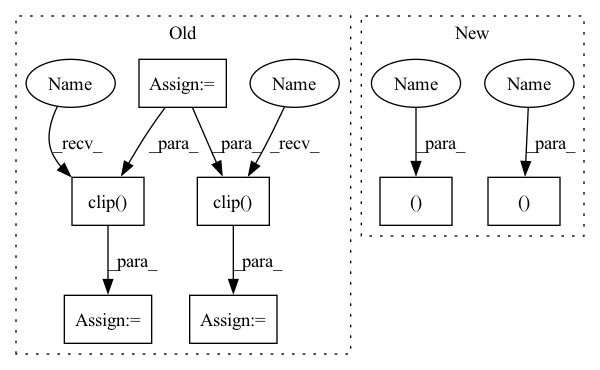

Pattern ID :18741

Before Change
mask = np.ones((h, w), np.float32)
for n in range(self.n_holes):
y = np.random.randint(h)
x = np.random.randint(w)
y1 = np.clip(y - self.length // 2, 0, h)
y2 = np.clip(y + self.length // 2, 0, h)
x1 = np.clip(x - self.length // 2, 0, w)
x2 = np.clip(x + self.length // 2, 0, w)
img[y1:y2, x1:x2] = 0
After Change
def __call__(self, img):
if random.random() < self.p:
left, top, h, w, ch = self.get_params(img, self.scale, self.ratio)
if self.pixel_level:
c = np.random.randint(*self.value, size=(h, w, ch), dtype="uint8")
else:
c = random.randint(*self.value)
if self.pixel_level:
c = PIL.Image.fromarray(c)
img.paste(c, (left, top, left + w, top + h))
return img
return img
In pattern: SUPERPATTERN
Frequency: 3
Non-data size: 7
Instances
Fragment ID: 60947691
Project Name: cavalleria/cavaface.pytorch
Commit Name: 714704fafc3e0f9569a15822bb45af6747a7c4be
Time: 2020-07-20
Author: 605370459@qq.com
File Name: dataset/utils.py
M Class Name: Cutout
N Class Name: Cutout
M Method Name: __call__(2)
N Method Name: __call__(2)
M Parent Class: object
N Parent Class: object
M File Name: dataset/utils.py
N File Name: dataset/utils.py
M Start Line: 83
M End Line: 96
N Start Line: 136
N End Line: 148
'>
Before Change
def forward(self, state):
a = F.relu(self.fc1(state))
a = F.relu(self.fc2(a))
mu = self.mu_head(a)
mu = torch.clip(mu, MEAN_MIN, MEAN_MAX)
log_sigma = self.sigma_head(a)
log_sigma = torch.clip(log_sigma, LOG_STD_MIN, LOG_STD_MAX)
sigma = torch.exp(log_sigma)
a_distribution = Normal(mu, sigma)
action = a_distribution.rsample()
logp_pi = a_distribution.log_prob(action).sum(axis=-1)
logp_pi -= (2 * (np.log(2) - action - F.softplus(-2 * action))).sum(axis=1)
After Change
return a_distribution, a_tanh_mode
def forward(self, state):
a_dist, a_tanh_mode = self._get_outputs(state)
action = a_dist.rsample()
logp_pi = a_dist.log_prob(action).sum(axis=-1)
return action, logp_pi, a_tanh_mode
def get_log_density(self, state, action):
a_dist, _ = self._get_outputs(state)
action_clip = torch.clip(action, -1. + EPS, 1. - EPS)
'>
Fragment ID: 60947693
Project Name: ryanxhr/dwbc
Commit Name: b3791e408af7125fde12cda1cdeaefbaa400aacc
Time: 2022-06-30
Author: xuhaoran8@jd.com
File Name: algos/DWBC.py
M Class Name: Actor
N Class Name: Actor
M Method Name: forward(2)
N Method Name: forward(2)
M Parent Class: nn.Module
N Parent Class: nn.Module
M File Name: algos/DWBC.py
N File Name: algos/DWBC.py
M Start Line: 35
M End Line: 52
N Start Line: 51
N End Line: 54
'>
Before Change
mask = np.ones((h, w), np.float32)
for n in range(self.n_holes):
y = np.random.randint(h)
x = np.random.randint(w)
y1 = np.clip(y - self.length // 2, 0, h)
y2 = np.clip(y + self.length // 2, 0, h)
x1 = np.clip(x - self.length // 2, 0, w)
x2 = np.clip(x + self.length // 2, 0, w)
img[y1:y2, x1:x2] = 0
After Change
def __call__(self, img):
if random.random() < self.p:
left, top, h, w, ch = self.get_params(img, self.scale, self.ratio)
if self.pixel_level:
c = np.random.randint(*self.value, size=(h, w, ch), dtype="uint8")
else:
c = random.randint(*self.value)
if self.pixel_level:
c = PIL.Image.fromarray(c)
img.paste(c, (left, top, left + w, top + h))
return img
return img
'>
Fragment ID: 60947692
Project Name: cavalleria/cavaface.pytorch
Commit Name: 714704fafc3e0f9569a15822bb45af6747a7c4be
Time: 2020-07-20
Author: 605370459@qq.com
File Name: dataset/utils.py
M Class Name: Cutout
N Class Name: Cutout
M Method Name: __call__(2)
N Method Name: __call__(2)
M Parent Class: object
N Parent Class: object
M File Name: dataset/utils.py
N File Name: dataset/utils.py
M Start Line: 83
M End Line: 96
N Start Line: 136
N End Line: 148